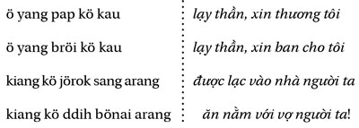

Chương 32
Làm cái bẫy chuột tốt hơn và mọi người sẽ tự tìm đến bạn.
- Ralph Waldo Emerson
QUẢNG CÁO CHỈ DÀNH CHO KẺ THẤT BẠI
Oregano’s Pizza Bistro là một chuỗi cửa hàng pizza nhỏ tại Phoenix. Mỗi quán đều trang hoàng giống nhau theo phong cách rustic-retro. Trong quán bạn sẽ không tìm đâu ra chiếc tivi độ nét cao mà chỉ là các bộ phim trắng đen. Còn các món thì sao? Ngon không tưởng.
Muốn vào ăn thử thì phải đặt bàn từ trước. Lúc nào cũng có hàng dài đứng chờ xếp hàng trước quán.
Tuy nhiên, điều kỳ lạ là họ chả bao giờ quảng cáo.
Chưa bất kỳ lần nào.
Tôi chưa từng thấy họ quảng cáo trên các báo đài, cũng chả có chương trình tặng phiếu giảm giá nào. Họ không quảng cáo vì họ không cần quảng cáo. Họ có một thứ mà bất kỳ doanh nhân nào cũng thèm muốn: sản phẩm xuất sắc.
Đó là một sản phẩm siêu hạng, xuất sắc và khác biệt khiến khách hàng đặc biệt yêu thích, trung thành và giới thiệu thêm cho nhiều người.

Nói một cách đơn giản. Hữu xạ tự nhiên hương. Ví dụ, nếu bạn tìm ra phương thuốc chữa ung thư, đoán xem bao lâu bạn sẽ giàu? Ngay khi một vài người được chữa khỏi, lập tức tiếng lành sẽ vang xa. Các báo đài sẽ cấp tập đưa tin. Và việc quảng cáo cũng như muối bỏ bể.
Chốt lại, sản phẩm xuất sắc sẽ chỉ ra đâu là kẻ tầm thường sống nhờ quảng cáo hay tăng trưởng bùng nổ như nấm mọc sau mưa.
Trong ví dụ với chuỗi pizza Oregano, mô hình kinh doanh và sản phẩm quá đỗi xuất sắc khiến khách hàng hài lòng, họ trung thành và giới thiệu thêm cho nhiều người khác. Chính sự hài lòng này tạo ra sự tăng trưởng chóng mặt. Sản phẩm xuất sắc giống như một đám cháy không thể kiểm soát. Với nó, quảng cáo chỉ là một lựa chọn chứ không cần thiết.
Nó cũng là chìa khóa để bạn thu hút khách hàng. Khi bạn có nó, sẽ không ai còn quan tâm những lần bạn thất bại trước đó.
Ví dụ, ở góc đường đông đúc gần chỗ tôi tập gym, có một mặt bằng nhìn có vẻ rất phù hợp để mở quán ăn. Tuy thế, nhiều chủ quán đã thử và đều thất bại. Chẳng có ai bán cái gì ra hồn. Đồ ăn thì thường thường, không gian trang trí thì cũng thường thường. Mỗi lần thử đều phải đóng cửa sau vài tháng.
Và rồi Oregano dọn đến. Không chỉ nó bán được hàng mà còn bán rất chạy. Sản phẩm xuất sắc chính là chìa khóa để bạn “in tiền”, thậm chí là ngay tại nơi mà Coco Chanel không sống nổi.
Sản phẩm xuất sắc cũng chính là bí quyết đằng sau thành công của chuỗi nhà hàng In-N-Out Burger ở West Coast. Bất cứ khi nào có cửa hàng mới mở, đám đông chờ xếp hàng cả dặm. Và cũng như thế, tôi chưa thấy họ quảng cáo bao giờ. Nếu muốn, họ vẫn có thể quảng cáo, nhưng nó chỉ có tác dụng hâm nóng chứ không cần thiết.
Do đó, hãy xem thử trong khu phố nhà bạn. Có nhà hàng nào lúc nào cũng đông khách? Và hãy tự hỏi, họ có quảng cáo hay tặng phiếu giảm giá gì không? Hay bạn biết đến họ thông qua bạn bè và mạng xã hội?
Dĩ nhiên, khái niệm sản phẩm xuất sắc không chỉ áp dụng cho các hàng quán.
Bất kỳ sản phẩm hay dịch vụ nào cũng có thể là sản phẩm xuất sắc. Cuốn sách đầu tiên của tôi bán được hàng ngàn cuốn. Khi bạn đọc cuốn sách này, có thể con số đã lên đến hàng triệu. Tôi có chi hàng đống tiền để quảng cáo?
Toàn bộ ngân sách tôi dành cho quảng cáo chỉ chưa đến 3 ngàn đô-la – chỉ trong hai tháng khi mới xuất bản. Hơn nữa, tôi cũng không thể quảng cáo trên Facebook vì họ nói sách của tôi lừa đảo. Thêm vào đó, cuốn sách đầu tiên của tôi có bìa rất xấu và rẻ tiền. Thế đấy, tôi bắt tay vào tự xuất bản giống như bơi với hai cục chì xích vào chân – một cuốn sách có bìa rẻ tiền và không thể quảng cáo đại trà.
Nhưng kỳ lạ là nó vẫn bán tốt. Tất cả là vì sản phẩm xuất sắc. Độc giả thích cuốn sách và giới thiệu thêm cho bạn bè, đồng nghiệp và những người thân trong gia đình. Họ thường gởi email cho tôi như thế này: “Bạn tôi giới thiệu cuốn sách của bạn…”. Sau đây là một ví dụ:
Gởi MJ, tôi năm nay hai mươi chín tuổi ở Santiago Chile. Tôi có bằng kỹ sư phần mềm. Đã từ lâu tôi luôn thích đọc sách về phát triển bản thân, khởi nghiệp, kinh doanh. Vài tháng trước, khi đang tìm sách để đọc thì tôi thấy cuốn sách Money: Master the Game của Tony Robbins. Tôi cảm thấy cuốn sách đó không thuyết phục lắm, nhưng nghĩ mình sẽ đọc nó… cho đến khi tôi đọc được ý kiến của một bạn tên Chris.
Chris viết: “Trước khi mua sách này, hãy xem qua sách The Millionaire Fastlane của MJ DeMarco. Đây là cuốn sách thực tế nhất nói về kinh doanh. Không lòng vòng, đi thẳng vào thực tế. Nếu bạn muốn khởi sự làm giàu, cuốn sách đó chính xác là điều bạn đang tìm kiếm. Chính nó giúp tôi sáng mắt ra và đạt được tự do tài chính ngay khi chỉ mới ba mươi tuổi… chứ không phải lúc bảy mươi tuổi”.
Và chỉ có thế, một cuốn sách nữa được bán.
Đây chỉ là lời giới thiệu ngẫu nhiên từ một người lạ ở trang blog nào đó đang nói về sách của một tác giả khác. Có bao nhiêu người đọc được ý kiến đó và mua sách? Và sẽ có bao nhiêu lời giới thiệu nữa trên mạng? Chắc chắn là rất nhiều. Và nhờ đó sách của tôi bán được mà tôi không cần phải đụng tay vào.
QUẢNG CÁO HAY LÀ TẠO SỰ THU HÚT?
Bất kỳ cuộc phỏng vấn nào tôi thực hiện đều do được mời. Không hề có chuyện tôi tự động gởi email để cầu xin. Tương tự như thế với các giấy phép mua bản quyền dịch sách: các nhà xuất bản chủ động liên hệ với tôi. Sách của tôi tự bán mà không cần tôi phải làm gì.
Đằng sau câu chuyện này là phép màu của sản phẩm xuất sắc – chính nó quyết định xem anh nào có mức tăng trưởng thần kỳ hay chật vật để tồn tại. Chính nó quyết định xem anh nào phải sống nhờ quảng cáo hay nhân rộng nhanh như cỏ dại và nhanh chóng làm giàu.
Trước đây không lâu, bất kỳ doanh nghiệp nào chi nhiều quảng cáo hơn sẽ bán được nhiều hàng nhất. Nếu nhà vệ sinh nhà bạn bị rỉ nước, bạn tìm ngay từ khóa “thợ sửa ống nước” và gọi ngay cho anh nào có quảng cáo bự nhất. Nếu bạn đang ăn bánh, thì có lẽ là do bạn thấy nó quảng cáo ở đâu đó hoặc do bạn thấy nó có bao bì bắt mắt trong cửa hàng. Quảng cáo hay bao bì bắt mắt đều cần rất nhiều tiền. Muốn bán càng nhiều hàng, các doanh nghiệp phải chi càng nhiều tiền cho quảng cáo. Chính quảng cáo tạo ra doanh thu bán hàng.
Trái lại, một sản phẩm hay dịch vụ xuất sắc không cần điều đó, tự nó đã có sức hút. Khách hàng tự tìm đến bạn. Mỗi lần bán được hàng, sức hút của nó lại càng lớn dần. Sức hút của nó được tạo ra từ truyền miệng, từ các đánh giá trên mạng xã hội và từ sự hài lòng của khách hàng.
Một ví dụ nữa là xe hơi của Tesla Motors. Trong một buổi hội thảo, Elon Musk đã ám chỉ ngân sách (năm 2015) dành cho quảng cáo là bằng không. Tuy thế, hàng tỷ đô-la doanh thu từ bán xe đã được tạo ra. Chuyện gì đã xảy ra? Sức hút của sản phẩm xuất sắc.
Nếu khách hàng đánh giá tốt và chia sẻ trải nghiệm tuyệt vời với sản phẩm của bạn trên mạng xã hội, chúc mừng bạn, bạn đang có sản phẩm có sức hút tuyệt vời. Thành hay bại chỉ được quyết định bởi một điều: thị trường phản ứng với sản phẩm của bạn ra sao.
Khi cuốn sách đầu tiên của tôi xuất bản, tôi không nhớ ai là người đầu tiên mua sách, tôi cũng không nhớ những tháng đầu tiên bán được bao nhiêu. Điều đó không quan trọng với tôi. Điểm mấu chốt tôi quan tâm là nó có sức hút với độc giả hay không, hoặc nó có phải là sản phẩm xuất sắc hay không.
Tuy nhiên, tôi còn nhớ như in email đầu tiên từ một người xa lạ thổ lộ tâm sự rằng cuốn sách của tôi giúp anh ta thay đổi cuộc đời. Tôi còn nhớ những lần cuốn sách được giới thiệu từ một người xa lạ trên Twitter và trên Facebook. Sức hút chính là đặc tính quan trọng nhất của một sản phẩm xuất sắc. Điều đó cũng có nghĩa là tôi có thể đầu tư tất tay vào cuốn sách đó và phổ biến nó ở tầm thế giới. Nếu không có sức hút, tôi sẽ phải đầu tư vào quảng bá. Điều đó chẳng khác gì chín trăm ngàn cuốn sách tự xuất bản hàng năm.
Xin cảm ơn, tôi không thể làm thế.
Tệ thay, rất nhiều doanh nghiệp sống nhờ vào ngân sách quảng cáo hàng triệu đô-la để duy trì doanh số. Rất nhiều người đã khởi sự từ sản phẩm xuất sắc nhưng lại không thể tiếp tục vì lòng tham của các nhà đầu tư (tôi sẽ bàn kỹ hơn đến điều này).
Hãy suy nghĩ thử về điều đó.
Có ai giới thiệu bạn đi ăn McDonald’s? Hay làm một lon Budweiser? Hài nhỉ? Sự thật là tôi rất nghi ngờ những công ty đang đốt tiền quảng cáo bởi vì nó chỉ ra rằng sản phẩm của họ chẳng có gì đặc sắc.
Ví dụ, tôi né cả hai công ty Geico và Progressive Insurance. Cả hai đều quảng cáo rất thường xuyên, vì thế tôi thà tắt tivi luôn cho đỡ phiền. Quảng cáo mạnh càng khiến tôi nghi ngờ. Tôi cũng chưa từng giới thiệu họ cho ai cả.
Điều tương tự cũng diễn ra.
Bạn có bao giờ nhận được phong bì quảng cáo dầy cộm những phiếu giảm giá dịch vụ tân trang, dọn dẹp? Một lần nữa, những quảng cáo này chỉ làm dấy lên những nghi ngờ về chất lượng sản phẩm của họ. Tôi không tin những quảng cáo này, tôi thà hỏi các đánh giá từ các nhóm Facebook còn hơn.
Quảng cáo càng dữ dội thì càng chứng tỏ sản phẩm đó có vấn đề.
Để kiểm chứng, tôi tiến hành thử một thí nghiệm nhỏ. Tôi viết ra những công ty đang dội quảng cáo liên tục trên báo đài. Sau vài phút, tôi có danh sách năm công ty:
Tôi lên trang web Yelp xem thử đánh giá của người dùng về dịch vụ của các công ty này. Nhớ rằng tôi không có chủ ý gì mà chỉ đơn giản là ghi ra các công ty đang có quảng cáo rất dữ dội. Sau đây là kết quả:

Trung bình đánh giá cho cả năm công ty này là: 2/5
Và nếu tính cả những người không thèm đánh giá, con số trung bình sẽ là 1/5. Kết luận? Sản phẩm của những công ty này đều có vấn đề. Thậm chí có một số đánh giá sản phẩm là lừa đảo. Thế nên, họ mới cần quảng cáo. Cần có thêm khách hàng mới để bù vào những khách hàng đã bỏ đi – mô hình kinh doanh chỉ còn là quảng cáo để chèo kéo khách hàng. Và nếu bạn cần quảng cáo để bán hàng, xin lỗi nhé, bạn đang gặp rắc rối to rồi.
Sự thật là, nhiều công ty không nhận chân ra vấn đề: hiện giờ khách hàng không quyết định mua hàng dựa trên quảng cáo. Thay vào đó, họ quyết định thông qua các đánh giá từ mạng xã hội hay từ bạn bè đồng trang lứa. Những trang web như Yelp, Angie’s List, và TripAdvisor mang đến cho khách hàng công cụ để họ đánh giá về sản phẩm. Trước khi mua hàng, tôi thường lên Amazon xem các đánh giá. Quảng cáo có thể gây sự chú ý, nhưng chính những đánh giá ảnh hưởng đến quyết định mua hàng của tôi.
Hành vi tương tự cũng xảy ra ở các nhóm. Ví dụ, tôi là thành viên trong nhóm Facebook của cộng đồng ở Fountain Hills, ở đó chúng tôi chia sẻ các thông tin và sự kiện ở địa phương. Tuy nhiên, quá nửa các bài viết là xin ý kiến đánh giá. Sau đây là mười bài viết gần nhất:
Ngoại trừ thực phẩm hàng ngày, hãy xem thử năm món bạn mua gần đây. Đây là danh sách của tôi và lý do vì sao tôi mua:
Như bạn thấy đấy, tôi chả mua hàng vì quảng cáo. Chả có ai từ những công ty này gọi điện chèo kéo. Những sản phẩm này tự bán hàng thông qua các đánh giá và giới thiệu. Và trong một số trường hợp, từ những sản phẩm mẫu. Những công ty này tăng trưởng bùng nổ không phải từ quảng cáo mà từ đánh giá của khách hàng.
Khái niệm sản phẩm xuất sắc cũng bị lạm dụng bởi mô hình đa cấp 30 tỷ đô-la của Bernard Madoff. Nhiều năm, hắn trả lãi suất cao hơn mặt bằng chung. Thay vì 5%, hắn trả 10 – 15%. Kết quả là các nhà đầu tư bắt đầu mờ mắt và giới thiệu thêm cho bạn bè. Và cứ thế, cú lừa lên đến hàng tỷ đô-la. Vũ khí chính của bọn lừa đảo này là một sản phẩm giả, trá hình sản phẩm xuất sắc.
Hãy nhớ rằng tiền được trao đổi cho giá trị của sản phẩm nhưng chưa chắc đó là giá trị thật.
Điều tệ hại là rất nhiều doanh nhân không chủ tâm tạo ra sản phẩm độc đáo, khác biệt và có sức hút thực sự. Thay vào đó, họ khởi sự theo cách sống nhờ vào quảng cáo, chèo kéo khách hàng và chả quan tâm đến việc tạo ra giá trị thực sự hay giúp ích cho khách hàng – chỉ biết chăm chăm chạy theo tiền.
Bọn chèo kéo này, tự mượn danh là chuyên gia marketing, không tìm cách thỏa mãn nhu cầu của khách hàng hoặc làm cho cuộc sống của họ dễ thở hơn; thay vào đó họ đưa ra những sản phẩm chỉ để kiếm tiền thông qua các mánh khóe marketing. Trên diễn đàn của tôi, đám “doanh nhân” láu cá này lộ diện bằng những câu hỏi:
Họ không quan tâm đến việc làm hài lòng hay giúp ích gì cho khách hàng. Thay vào đó, họ đưa ra sản phẩm đơn điệu, không có gì đặc biệt chỉ nhằm mục đích kiếm tiền bằng các chiêu trò marketing.
Trên mạng Internet có đầy rẫy bọn lẻo mép đóng gói các thông tin lộn xộn thành các chương trình khai vấn, ebook và bất cứ thứ gì có thể bán. Đằng sau những lời hứa hẹn, quà tặng, cái bạn không thấy là những con số tệ hại: chẳng ai mua lần thứ hai, 25% đòi lại tiền. Chỉ giỏi khoác lác. Đó không phải là kinh doanh; đó là làm ăn kiểu chụp giựt.
Khi sản phẩm của bạn không ra gì và chẳng có ai mua thêm, hoặc đa số đánh giá tệ, quảng cáo là cách duy nhất để tồn tại. Và khi hết quảng cáo, doanh thu cũng hết. Trong trường hợp này, doanh nghiệp chỉ còn làm công việc marketing chèo kéo khách hàng để bán sản phẩm chất lượng kém. Thay vì bán sản phẩm có chất lượng thực sự, đám này chỉ bán những lời quảng cáo.
Lúc này, bạn nghĩ tôi có ác cảm với quảng cáo, bán hàng và marketing. Hoặc tôi cho rằng nó không cần thiết.
Không phải vậy đâu nhé!
Sự thật đó chính là một trong những kỹ năng quan trọng nhất mà bạn cần có trong cuộc sống.
Tôi làm marketing không phải để chèo kéo khách hàng mà để chỉ ra mối quan hệ của nó với sức hút của sản phẩm xuất sắc. Trong một doanh nghiệp tập trung vào sản phẩm, quảng cáo chỉ để thêm nhiệt cho độ hot của sản phẩm, chứ không phải là điều bắt buộc.
Vì thế, bạn có thể sống được bao lâu nếu ngưng quảng cáo? Nếu câu trả lời là vài tuần hay vài tháng, bạn đang gặp vấn đề với sản phẩm mình đang bán. Và đó cũng chính là vấn đề với toàn bộ doanh nghiệp của bạn.
LÀM SAO ĐỂ TẠO RA SẢN PHẨM XUẤT SẮC?
Khi mới khởi nghiệp, cho dù bạn đang trong hoàn cảnh nào, mục tiêu tối thượng của bạn không phải là bán hàng mà là làm sao biết được sản phẩm của mình có phải là sản phẩm xuất sắc hay không. Nó chính là chìa khóa để bạn nhanh chóng tăng trưởng thị phần và làm giàu.
Trong mô hình khởi nghiệp UNSCRIPTED, chiến lược sản phẩm xuất sắc gắn liền với niềm tin đúng đắn và có mục đích dứt khoát, rõ ràng. Tạo ra một sản phẩm xuất sắc không chỉ đơn thuần là làm ra một sản phẩm tốt hay khác biệt, mà còn hơn thế nữa.
Một sản phẩm xuất sắc phải tuân thủ năm nguyên tắc căn bản gọi tắt là CENTS:
Việc xem xét năm nguyên tắc này giúp định hình rõ ràng sản phẩm xuất sắc. Hay nói cách khác, nếu doanh nghiệp của bạn có thể tuân thủ năm nguyên tắc này, bạn sẽ khởi nghiệp thành công.